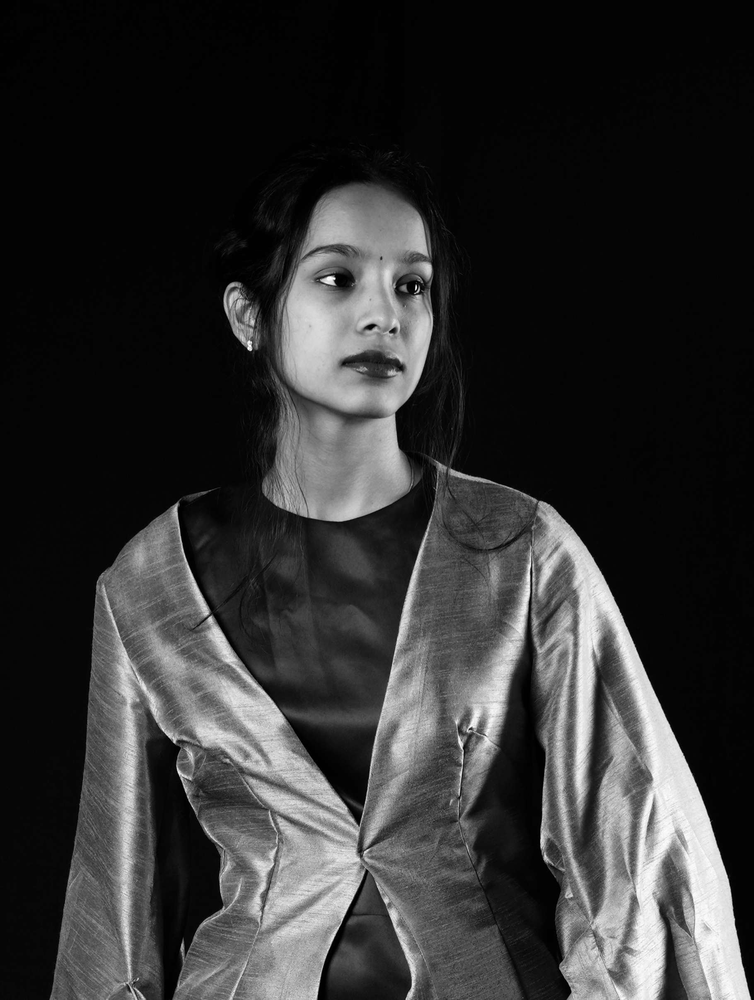

Fashion design portfolio
Fashion designer at Pearl Academy working across material research, range building, customer strategy, brand thinking, and technical development.
D Pragna Reddy
A portfolio built like an editorial space: quiet, text-led, and grounded in the mood, logic, and product worlds behind each project.

About
Designing collections by moving from concept and customer insight toward form, finish, and feel.
Pragna's work connects fashion illustration, merchandising logic, research, material choice, and storytelling. Each project begins with a specific audience or emotional space, then expands into silhouettes, color systems, brand narratives, and final ranges.
Our collections
Six project worlds
01 / Recovery wear
Wrapora
A cocoon-and-wrap recovery wear story shaped around softness, breathability, compression, and the emotional ease of post-workout rest.
02 / Semi-formal
Ver Forme
A sustainable Gen Z semi-formal collection that merges clean export-house tailoring with ethical materials, modular dressing, and digital-first behavior.
03 / Kidswear
Oceanic Capsule
A calm, playful capsule for ages 4-8 using ocean references, soft knits, durable construction, and easy movement as the main design drivers.
04 / Concept collection
The Third Sign
A Gemini-inspired project exploring duality, celestial mood, structured menswear form, and an adaptable business-casual identity.
05 / Accessories brand
NU KAWA
A luxury leather brand world focused on natural leather, handcrafted confidence, identity systems, and a more intimate idea of conscious luxury.
06 / Menswear brand
Alder & Ash
A quiet-luxury menswear proposal for conscious Gen Z professionals, combining refined understatement with strategic business planning.
Contact